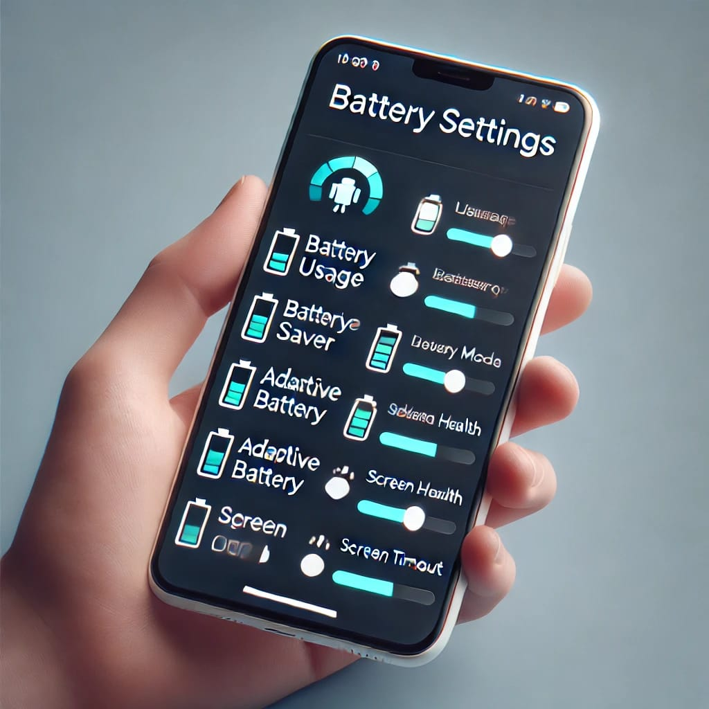
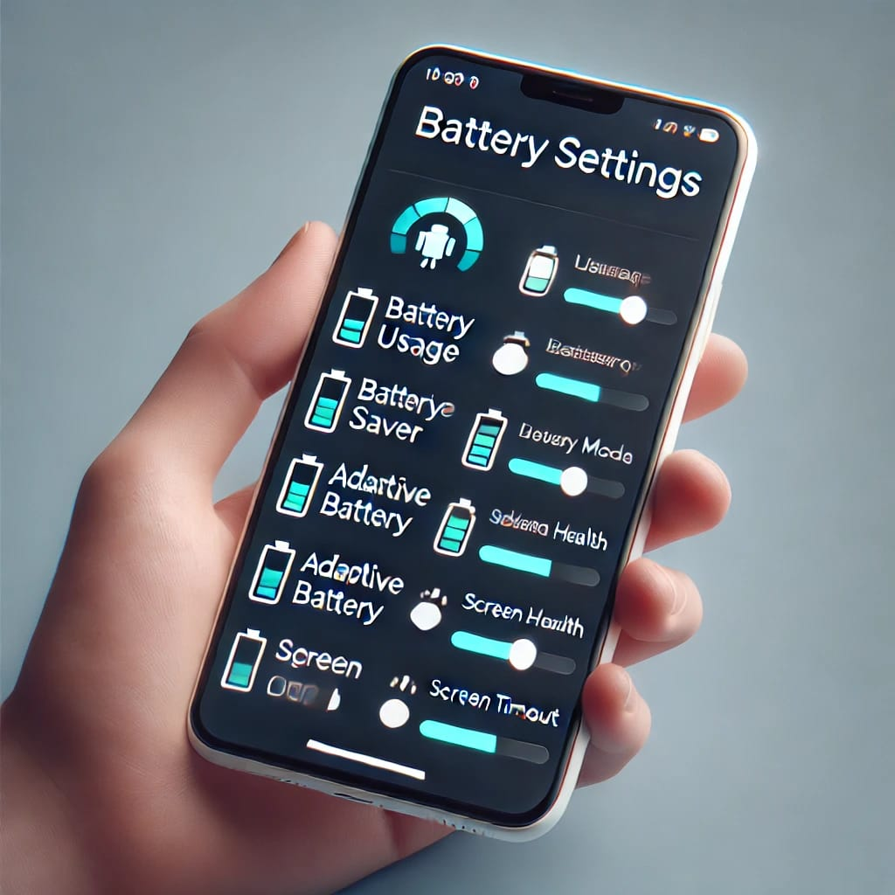
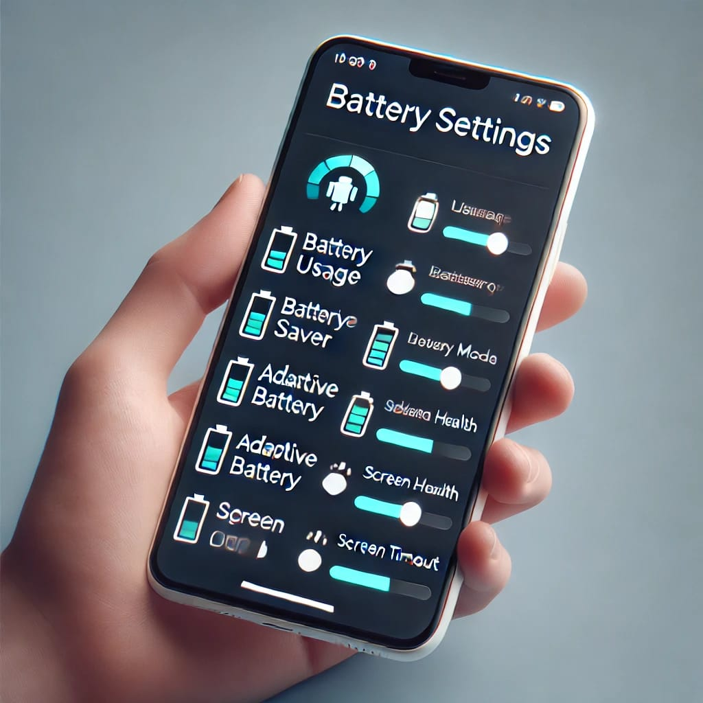

Explaination about the Battery Settings, which helps them to store the BATTERY of their Android Mobile.
Battery settings on Android phones are designed to help you manage power consumption, extend battery life, and monitor the health of your battery. Here’s a detailed explanation of the various battery settings and features typically found on Android devices:
1. Battery Usage
- Battery Usage Overview: This section shows you how much battery power has been used since the last full charge. It displays a graph of battery usage over time, along with a list of apps and system functions consuming the most power.
- App Usage Details: You can tap on individual apps to see more details, such as how much power they’ve used while active and in the background.
2. Battery Saver Mode
- Battery Saver: When enabled, this mode reduces your phone’s performance and limits background data usage to extend battery life. It typically turns off background processes, lowers screen brightness, and disables features like location services.
- Automatic Activation: You can set Battery Saver to activate automatically when your battery reaches a certain percentage (e.g., 15% or 20%).
- Extreme Battery Saver: Some devices offer an Extreme Battery Saver mode, which limits phone functionality to only essential apps and services, extending battery life significantly during critical times.
3. Adaptive Battery
- Adaptive Battery: This feature uses machine learning to predict which apps you’ll use in the next few hours and limits battery usage for apps you’re less likely to use. Over time, this helps improve battery life by optimizing power usage based on your habits.
- App Standby Buckets: Apps are categorized into different buckets based on how frequently you use them, with more restrictive limits placed on less frequently used apps.
4. Battery Health
- Battery Health Monitoring: Some Android phones provide an estimate of the battery’s health, which indicates how much capacity your battery has lost since it was new. This can help you decide when it might be time to replace the battery.
- Charging Optimization: Certain settings help extend battery life by optimizing the charging process, such as slowing down charging when the battery is nearly full to reduce wear and tear.
5. Screen and Display Settings
- Screen Brightness: Adjusting screen brightness is one of the most effective ways to save battery. You can manually set brightness or enable adaptive brightness, which automatically adjusts based on your environment.
- Screen Timeout: Reducing the screen timeout interval (the time it takes for the screen to turn off when not in use) can also save battery power.
- Dark Mode: Enabling dark mode on your device can reduce battery consumption, particularly on OLED and AMOLED screens, by using less power to display darker colors.
6. Power-Saving Tips
- Disable Unnecessary Features: Features like Bluetooth, Wi-Fi, GPS, and NFC can consume battery power when not in use. Turning them off when they’re not needed can help conserve energy.
- Close Background Apps: While Android manages background apps efficiently, manually closing apps that you’re not using can help save battery.
- Limit Notifications: Reducing the frequency of notifications or disabling them for certain apps can prevent unnecessary power usage.
- Use Airplane Mode: When you don’t need to be connected, turning on Airplane Mode will disable all wireless connections and save a significant amount of battery power.
7. Charging Management
- Fast Charging: Many Android devices support fast charging, which significantly reduces the time it takes to recharge your battery. However, using fast charging frequently may affect battery longevity over time.
- Wireless Charging: If your device supports wireless charging, it’s a convenient way to keep your phone charged throughout the day, although it may be slightly less efficient than wired charging.
8. Battery Percentage
- Show Battery Percentage: You can choose to display the battery percentage in the status bar, giving you a quick and easy way to monitor how much battery power is left.
- Notification Center: The battery percentage is also typically shown in the quick settings menu, along with an estimate of how long your battery will last based on your current usage.
9. Battery Usage Alerts
- High Usage Alerts: Android can notify you when an app is using an unusually high amount of battery power. You can then decide to force stop the app or adjust its settings to reduce battery drain.
- Optimization Suggestions: The system may also provide suggestions for optimizing battery life, such as dimming the screen or turning off power-hungry features.
10. Battery Optimization
- App-Specific Optimization: Android allows you to optimize battery usage on a per-app basis. You can restrict background activity for specific apps to save power.
- Doze Mode: When your device is idle for an extended period, Doze Mode reduces background activity and network access for apps to conserve battery.
